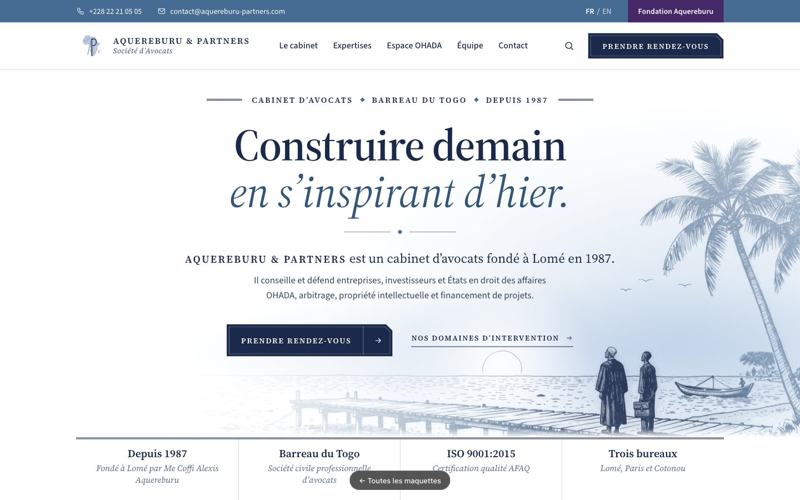

L’ouverture est le frontispice d’un cabinet, sur un dessin à la plume du wharf de Lomé fondu dans le blanc. Puis la devise sert de fil à toute la page, en trois temps : hier (l’arbre à palabres, l’histoire du cabinet, ses distinctions), aujourd’hui (la robe, les expertises, l’espace OHADA, l’équipe), demain (le soleil sur l’océan, la Fondation, le rendez-vous).

Regarde l’encre apparaître, cherche l’arbre à palabres au loin, puis fais défiler : trois intertitres rythment la page. Filtre le répertoire, parcours les médailles, choisis un associé, remplis la demande de rendez-vous.